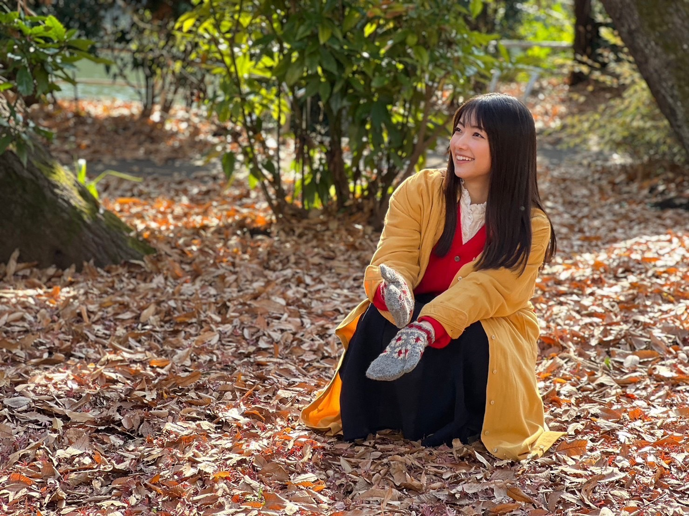
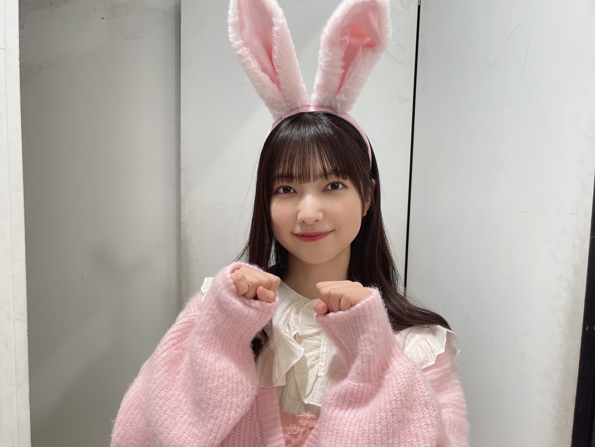
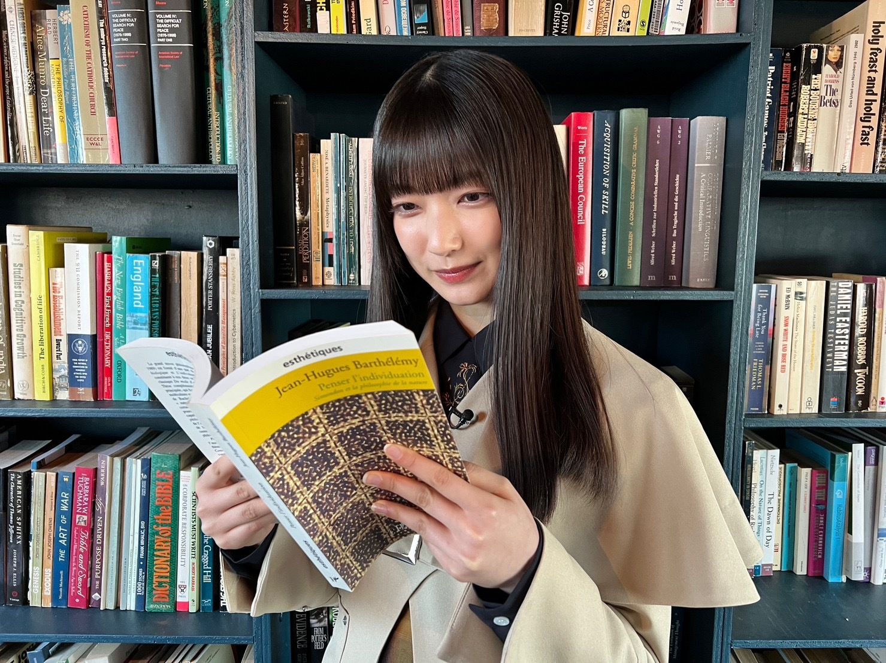
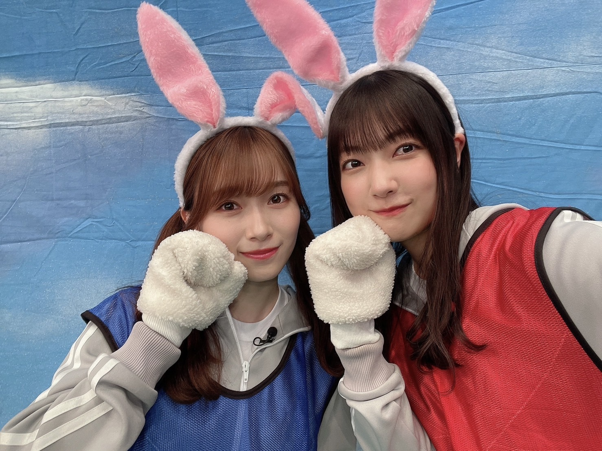

美しいものをなんで美しいと思うか考えてみたことがあって
無駄なものがないから、美しいんだなあっていう結論に
削ぎ落としたり
必要なものだけを加えたり
何が必要で何が無駄かは人それぞれ価値観があるから
何に対して美しいと思うかも結局人それぞれですね
無駄なものがないから美しい
同じことをカメラマンさんがおっしゃってて
ああ自分もそう思いますって会話をしたのが

「週刊少年マガジン」さんの撮影中での出来事でした
表紙・巻頭を務めさせていただきました✨
現在発売中です！
前回登場させていただいた際と
同じチームの皆さんとこうしてまたすぐにお会いできて、嬉しかったです〜*
たくさん笑わせてくださって、
いつも時間があっという間に過ぎていきます、、
雑誌を手に取ってくださったり、チェキを応募してくださったり、巻末のアンケートにお答えしてくださったり、、
みなさんのおかげでこうして表紙を飾らせていただけています！
ありがとうございます*

2023年、自分が思ういらないものを取り除いて
自分が思う必要なものを取り入れて
見えるところも見えないところも美しくありたいです
🤍「最強の時間割」出演させていただきました！
その道を極めていらっしゃる方を先生にお迎えして、授業を受けるTVer完全オリジナル番組です！
地球の歩き方 編集長 宮田崇さん
https://tver.jp/lp/episodes/epmampbhve
「世界197カ国のふしぎな聖地&パワースポット」をおうちで読んでみました🌏
いつかこの一冊と一緒にその場所に行ってみたいです
ショートショート作家 田丸雅智さん
https://tver.jp/lp/episodes/epx43rw7x4
授業の中で実際に短い物語を作ってみました！
アイデアの出し方が勉強になりました
ぜひチェックしてください〜〜

🤍今夜 1月22日（日）21:55〜
テレビ朝日「くりぃむナンタラ」
小林由依さん、井上梨名、武元唯衣と出演させていただきます✨
芸人さんに遠隔で指示していただき、自分じゃない自分でニセ番組の収録をしました〜*
見たことない4人が見れると思いますので、、ぜひ！！
🤍明日 1月23日（月）20:05〜
「さくらひなたロッチの伸びしろラジオ」
小池美波さんと出演させていただきます✨
ぜひおききください！
🤍3期生のドキュメンタリーも櫻坂46公式YouTubeチャンネルで公開されています！
https://youtu.be/xJc4QUx3lH0
まっすぐな目で一生懸命に取り組む3期生の姿が、
自分自身、初心を忘れずにいようと思わせてくれます*
ひとりひとりの自己紹介Vlogもみんなかわいくて、、心でだきしめました🫧
みなさんぜひ、チェックしてみてください！
そして、
今回の5thシングル「桜月」のカップリング曲で、センターを務めさせていただきます
支えてくれるメンバーやスタッフのみなさん
応援してくださるBuddiesのみなさん
関わってくださる全ての方々に感謝の気持ちです
もっともっと成長できるように心をこめて取り組みます
楽しみにしていてください🫧

ミーグリもご応募してくださったみなさんありがとうございます！
応援してくださるみなさんに嬉しい報告ができることが嬉しいです、、
お話しできるのとっても楽しみにしてます〜*
大園玲